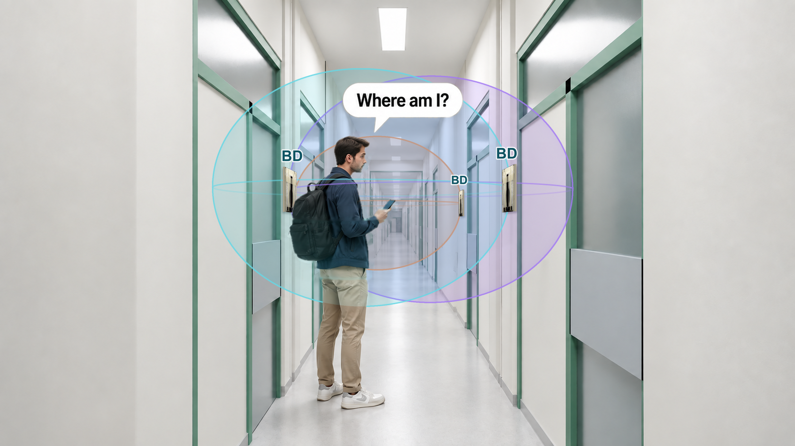
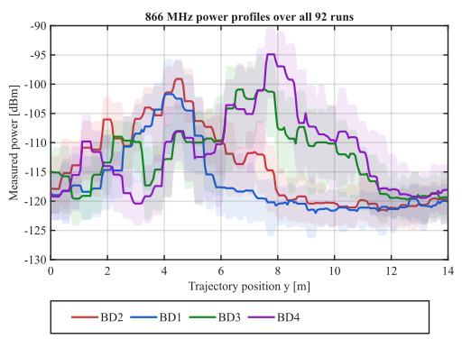
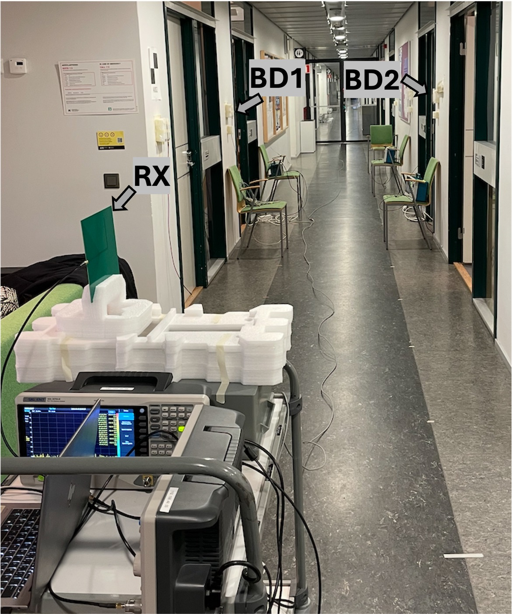
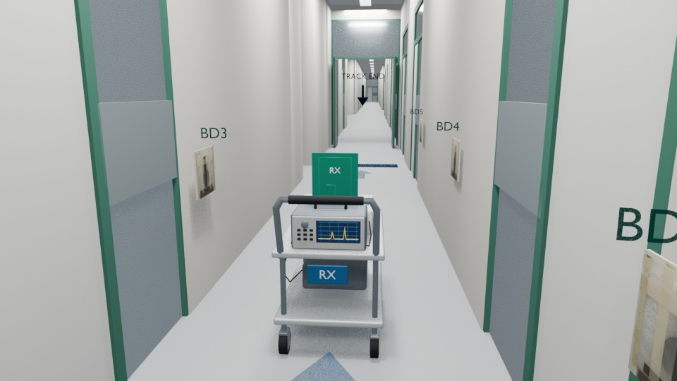
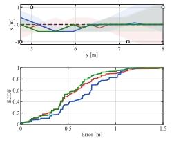
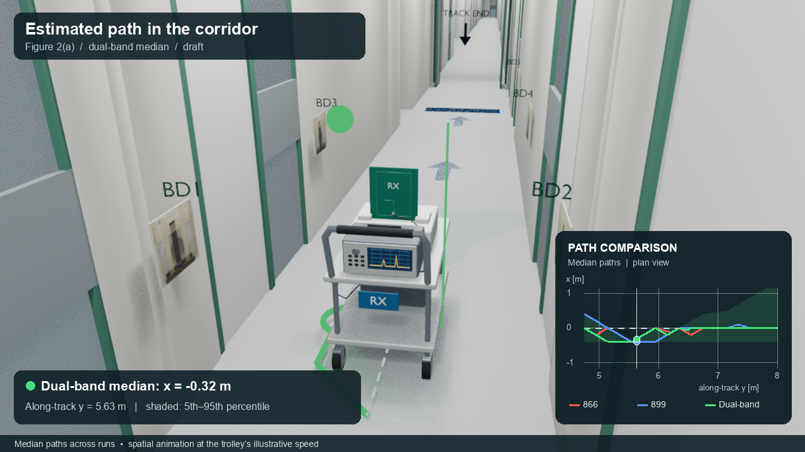

Hüseyin Yiğitler, Kalle Ruttik, Jingyi Liao, Alexander Sheverdyaev, Riku Jäntti
Department of Information and Communications Engineering
IPIN 2026
Localization without line of sight, and why a mounted tag has no fixed link budget
A grid of corridor cells, and what the received power from one tag is made of
Three stages that calibrate the tag map and estimate the path from the same data
92 runs in an office corridor, with one carrier and with two
What the method gives, and what is still open
A receiver moves through a building and must find its position from the radio signal it receives.
Received power falls predictably with distance, so a simple model locates the receiver.
Walls and corners add unknown losses. The simple model fails and localization becomes difficult.
We study the NLOS case: a receiver in a corridor the transmitter cannot see.
RADAR, INFOCOM 2000
Fingerprinting gives a point, but needs a site survey.
Orange, EuCNC 2025
Tag IDs give a room.

Three BDs illustrated
We study receiver localization when RX detects multiple BDs
under NLOS transmitter illumination.
Known anchors, distinct IDs. Wall tags reflect the carrier.
TX to tags is NLOS. Tags to RX is mostly LOS.
Assume a range for each tag. RX hears BD1–BD4.
These illustrative circles constrain its position.
The overlap gives a region.
How much finer can we locate RX with received power alone?

The corridor is divided into 0.4 m cells. The grid is shown at antenna height, 1 m above the floor. The grid and tag positions are known in advance.
The same 0.4 m cells from above, three across the corridor.
At sample \(t\) the receiver is in one cell, \(\ell_t\). The position estimate is the centre of that cell.
A dynamic program searches all cell sequences \(\ell_1, \dots, \ell_T\) exactly. Each step stays or moves to a cell within 0.6 m.
Carrier \(f\), tag \(k\), processed sample \(t\), in dBm
Illumination and mounting, per tag and carrier
Fitted
Log-distance with a fitted slope
Fitted
What depends on where the receiver is, per grid cell
Learned in stage 2
Modeling error and measurement noise after averaging
\(\varepsilon_{f,k,t} \sim \mathscr{G}\{0, \sigma_{f,\ell,k}^{2}\}\)
The map needs a path, and the path needs the model. From unlabeled power they cannot be estimated together, so we estimate in stages.
How far the measured tag powers are from what the model predicts for cell \(\ell\), summed over the tags.
The price of a step from cell \(\ell'\) to cell \(\ell\). A longer step costs more.
The estimated path is the cell sequence with the lowest total cost.
The dynamic program with a Huber observation cost and no residual map.
It alternates with a robust refit of the log-distance slope \(p_f\) and tag offsets.
Gives a path with no labels
The stage 1 path supplies the reference positions.
In each cell, the mean residual is the map entry. The spread is kept too.
Gives the residual map
The same dynamic program, now with a Gaussian observation cost.
The map corrects the prediction. The spread scales each mismatch.
Gives the final trajectory
Predicted power of tag \(k\) in cell \(\ell\): \(\;\;\mu_{f,\ell,k} \,=\, G_{f,k} + \Delta_f(U_\ell, B_k;\, p_f) + R_{f,\ell,k}\)
Huber penalty, \(\delta_p = 4\) dB. No residual map yet: \(R_{f,\ell,k} = 0\).
Gaussian negative log-likelihood. Stage 2 learns the residual map and variance.
Huber penalty on the step length, \(\lambda = 5\), \(\delta_m = 0.4\) m. Steps up to 0.6 m only.
Huber penalty: \(\rho_\delta(u) = \tfrac12 u^2\) for \(|u| \le \delta\), and \(\delta\,(|u| - \tfrac12\delta)\) beyond. Two carriers: \(c_t(\ell) = \sum_f w_f\, c_t^{(f)}(\ell)\).
Both carriers use one shared receiver trajectory, while each keeps its own fitted slope \(p_f\) and tag offsets \(G_{f,k}\).
A weighted sum of the two costs
A level shift can affect both carriers within one sample. A regularized estimate of \(\beta_t\) partially absorbs it in the observation cost.
Profiled out in closed form
Weak channel-level correlation supports diversity. The mean-residual correlation suggests a shared disturbance, which \(\beta_t\) partially absorbs.
Reference from timestamps, about 0.10–0.15 m uncertain. Samples at 4–4.75 m are scored at the 4.75 m grid boundary.


The remaining gap, 0.46 to 0.31 m, comes mainly from the surrogate path.


Hüseyin Yiğitler
Supported by the EU SNS project Ambient6G (grant 101192113)
and the Research Council of Finland project BANLOS (grant 375519).
Backup
| Method | Labels | 866 MHz | 899 MHz | 866 + 899 MHz | ||||||||||||
|---|---|---|---|---|---|---|---|---|---|---|---|---|---|---|---|---|
| Med. | P90 | P95 | |b| | by | Med. | P90 | P95 | |b| | by | Med. | P90 | P95 | |b| | by | ||
| Profiled tracking | None | 0.505 | 0.933 | 1.127 | 0.219 | 0.199 | 0.709 | 1.090 | 1.127 | 0.374 | 0.361 | 0.516 | 0.848 | 1.054 | 0.304 | 0.272 |
| Residual-map tracker | Stage 1 | 0.497 | 1.014 | 1.127 | 0.123 | 0.006 | 0.654 | 1.054 | 1.090 | 0.316 | 0.310 | 0.462 | 0.848 | 1.040 | 0.191 | 0.093 |
| RADAR kNN | Stage 1 | 0.516 | 1.090 | 1.216 | 0.108 | 0.042 | 0.638 | 1.053 | 1.090 | 0.339 | 0.324 | 0.462 | 0.912 | 1.054 | 0.229 | 0.150 |
| Residual-map tracker | Measured | 0.412 | 0.897 | 1.090 | 0.062 | −0.037 | 0.420 | 0.733 | 0.788 | 0.063 | 0.048 | 0.309 | 0.654 | 0.733 | 0.053 | −0.049 |
| RADAR kNN | Measured | 0.306 | 0.917 | 1.223 | 0.106 | −0.106 | 0.306 | 0.611 | 1.223 | 0.048 | −0.048 | 0.306 | 0.611 | 0.611 | 0.086 | −0.086 |
46 calibration and 46 evaluation runs, 598 samples, block averaging over 5 samples. Shaded rows: proposed tracker. Measured: timestamp-derived coordinates. |b|: pooled bias magnitude; by: bias along the track.
Backup
| Setting | Value |
|---|---|
| Grid spacing | 0.4 m |
| Neighbourhood radius | 0.6 m |
| Transition weight λ | 5 |
| Huber scale, observation | 4 dB |
| Huber scale, motion | 0.4 m |
| Slope search range | 1.2–4.0 |
| Block averaging | 5 samples |
| Map smoothing | 25 iterations, λr = 4 |
| Variance clipping | 1–12 dB |
| Common-mode σb | 4 dB |
| Change (dual-band) | Median | P90 |
|---|---|---|
| Self-calibrated, as reported | 0.462 | 0.848 |
| Grid 0.4 → 0.3 m | 0.460 | – |
| No block averaging | 0.49 | – |
| Cold start, as reported | 0.52 | 0.85 |
| Cold start, no block averaging | 0.56 | 0.98 |
Backup
Paths stay near the centreline, so off-axis cells are weakly constrained: the map is a correction along the corridor strip, not a full two-dimensional field.
Backup
Innovations \(\eta_{f,k,t}(\ell) = z_{f,k,t} - \hat\mu_{f,\ell,k}\) share a per-sample shift \(\beta_t \sim \mathcal N(0, \sigma_b^2)\).
Used as a robust scoring rule, not as a fully normalized joint likelihood.